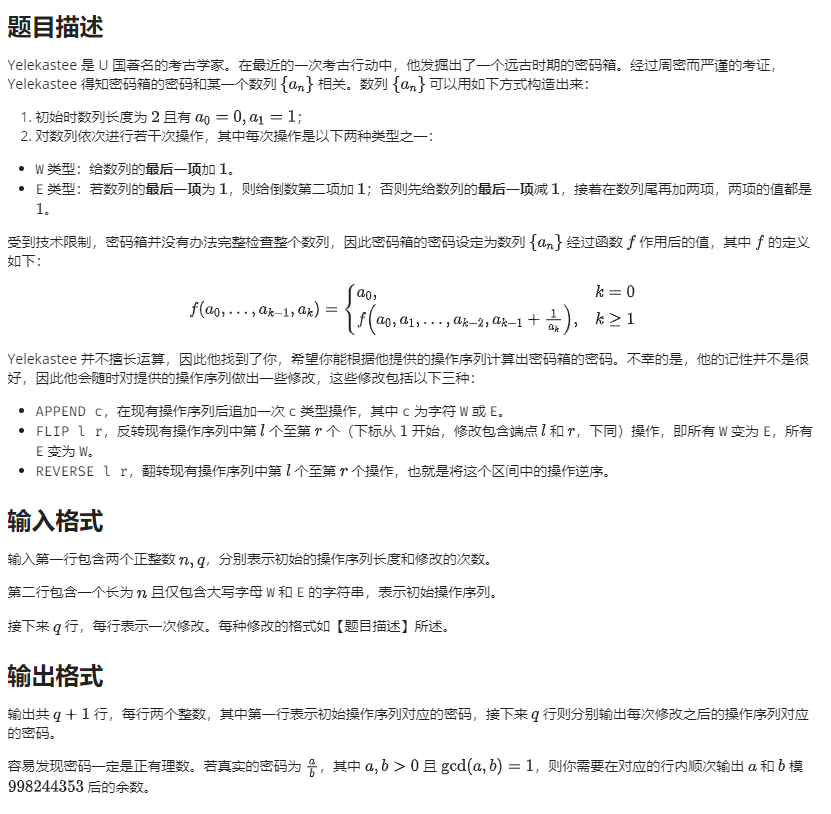

题面

题解
设向量 \(\begin{pmatrix}x \\ y\end{pmatrix}\) 表示分数 \(\dfrac x y\)。
那么整数加分数的运算 \(a+\dfrac x y = \dfrac{x + ay}{y}\) 可以表示为 \[ \begin{pmatrix} 1 & a\\ 0 & 1 \end{pmatrix} \begin{pmatrix} x\\y \end{pmatrix} = \begin{pmatrix} x+ay\\ y \end{pmatrix} \] 设 \(a_k = \dfrac{x}{y}\)，则 \(a_{k-1}'=a_{k-1}+\dfrac y x\)，写成矩阵形式为
\[ \begin{pmatrix} a_{k-1} & 1\\ 1 & 0 \end{pmatrix} \begin{pmatrix} x\\y \end{pmatrix} = \begin{pmatrix} a_{k-1}x+y\\ x \end{pmatrix} \] 记 \[ F = \begin{pmatrix} a_{0} & 1\\ 1 & 0 \end{pmatrix} \begin{pmatrix} a_{1} & 1\\ 1 & 0 \end{pmatrix} \dots \begin{pmatrix} a_{k} & 1\\ 1 & 0 \end{pmatrix} \] 则 \[ f(a_0, a_1, \dots, a_n) = F_{0, 0} \] 考虑维护矩阵 \(F\)。
操作W相当于右乘矩阵 \(\begin{pmatrix}1 & 0\\1 &
1\end{pmatrix}\) \[
\begin{pmatrix}
a_{k} & 1\\
1 & 0
\end{pmatrix}
\begin{pmatrix}
1 & 0\\
1 & 1
\end{pmatrix}
=
\begin{pmatrix}
a_{k} + 1 & 1\\
1 & 0
\end{pmatrix}
\] 操作E先考虑第二种情况，可以发现是右乘矩阵 \(\begin{pmatrix}1 & 0\\-1 &
1\end{pmatrix}\begin{pmatrix}1 & 1\\1 &
0\end{pmatrix}^2=\begin{pmatrix}2 & 1\\-1 &
0\end{pmatrix}\) \[
\begin{pmatrix}a_{k} & 1\\1 & 0\end{pmatrix}
\begin{pmatrix}2 & 1\\-1 & 0\end{pmatrix}
=
\begin{pmatrix}2a_{k}-1 & a_k\\2 & 1\end{pmatrix}
\] 验证 \(a_k=1\)
时是否也符合题意：
一方面 \[
\begin{pmatrix}a_{k-1} & 1\\1 & 0\end{pmatrix}
\begin{pmatrix}2a_{k}-1 & a_k\\2 & 1\end{pmatrix}=
\begin{pmatrix}a_{k-1} & 1\\1 & 0\end{pmatrix}
\begin{pmatrix}1 & 1\\2 & 1\end{pmatrix}=
\begin{pmatrix}a_{k-1}+2 & a_{k-1}+1\\1 & 1\end{pmatrix}
\] 另一方面 \[
\begin{pmatrix}a_{k-1}+1 & 1\\1 & 0\end{pmatrix}
\begin{pmatrix}1 & 1\\1 &
0\end{pmatrix}=\begin{pmatrix}a_{k-1}+2 & a_{k-1}+1\\1 &
1\end{pmatrix}
\] 所以操作E就是右乘矩阵 \(\begin{pmatrix}2 & 1\\-1 &
0\end{pmatrix}\)
平衡树维护即可。
// Author: HolyK
// Created: Fri Jul 30 19:13:22 2021
#include <bits/stdc++.h>
#define dbg(a...) fprintf(stderr, a)
template <class T, class U>
inline bool smin(T &x, const U &y) {
return y < x ? x = y, 1 : 0;
}
template <class T, class U>
inline bool smax(T &x, const U &y) {
return x < y ? x = y, 1 : 0;
}
using LL = long long;
using PII = std::pair<int, int>;
using Matrix = std::array<int, 4>;
constexpr int P(998244353);
inline void inc(int &x, int y) {
x += y;
if (x >= P) x -= P;
}
int fpow(int x, int k = P - 2) {
int r = 1;
for (; k; k >>= 1, x = 1LL * x * x % P) {
if (k & 1) r = 1LL * r * x % P;
}
return r;
}
inline int mod(LL x) { return x % P; }
Matrix operator*(Matrix a, Matrix b) {
return {
mod(1LL * a[0] * b[0] + 1LL * a[1] * b[2]),
mod(1LL * a[0] * b[1] + 1LL * a[1] * b[3]),
mod(1LL * a[2] * b[0] + 1LL * a[3] * b[2]),
mod(1LL * a[2] * b[1] + 1LL * a[3] * b[3])
};
}
constexpr Matrix M[2] = {Matrix({1, 0, 1, 1}), Matrix({2, 1, P - 1, 0})};
std::mt19937 rng(std::chrono::high_resolution_clock::now().time_since_epoch().count());
struct Node {
Node *ch[2];
bool rev, fl;
int rnd, val, siz;
Matrix sum[2][2];
Node(int x) : rev(0), fl(0), rnd(rng()), val(x), siz(1) {
ch[0] = ch[1] = nullptr;
sum[0][0] = sum[1][0] = M[val];
sum[0][1] = sum[1][1] = M[val ^ 1];
}
void reverse() {
rev ^= 1;
std::swap(ch[0], ch[1]);
std::swap(sum[0][0], sum[1][0]);
std::swap(sum[0][1], sum[1][1]);
}
void flip() {
fl ^= 1;
val ^= 1;
std::swap(sum[0][0], sum[0][1]);
std::swap(sum[1][0], sum[1][1]);
}
void pushdown() {
if (rev) {
if (ch[0]) ch[0]->reverse();
if (ch[1]) ch[1]->reverse();
rev = false;
}
if (fl) {
if (ch[0]) ch[0]->flip();
if (ch[1]) ch[1]->flip();
fl = false;
}
}
void pushup() {
sum[0][0] = sum[1][0] = M[val];
sum[0][1] = sum[1][1] = M[val ^ 1];
siz = 1;
if (ch[0]) {
sum[0][0] = ch[0]->sum[0][0] * sum[0][0];
sum[0][1] = ch[0]->sum[0][1] * sum[0][1];
sum[1][0] = sum[1][0] * ch[0]->sum[1][0];
sum[1][1] = sum[1][1] * ch[0]->sum[1][1];
siz += ch[0]->siz;
}
if (ch[1]) {
sum[0][0] = sum[0][0] * ch[1]->sum[0][0];
sum[0][1] = sum[0][1] * ch[1]->sum[0][1];
sum[1][0] = ch[1]->sum[1][0] * sum[1][0];
sum[1][1] = ch[1]->sum[1][1] * sum[1][1];
siz += ch[1]->siz;
}
}
void *operator new(size_t);
};
void *Node::operator new(size_t s) {
static char buf[200000 * sizeof(Node)], *p = std::end(buf);
return p -= s;
}
void split(Node *o, int k, Node *&x, Node *&y) {
if (!o) {
x = y = nullptr;
return;
}
o->pushdown();
int s = o->ch[0] ? o->ch[0]->siz : 0;
if (k <= s) {
split(o->ch[0], k, x, o->ch[0]);
y = o;
} else {
split(o->ch[1], k - s - 1, o->ch[1], y);
x = o;
}
o->pushup();
}
Node *merge(Node *x, Node *y) {
if (!x) return y;
if (!y) return x;
x->pushdown();
y->pushdown();
return x->rnd < y->rnd
? (x->ch[1] = merge(x->ch[1], y), x->pushup(), x)
: (y->ch[0] = merge(x, y->ch[0]), y->pushup(), y);
}
void print(Matrix a) {
std::cout << a[0] << " " << (a[0] + a[2]) % P << "\n";
}
int main() {
// freopen("code.in", "r", stdin);
// freopen("code.out", "w", stdout);
std::ios::sync_with_stdio(false);
std::cin.tie(nullptr);
int n, q;
std::string s;
std::cin >> n >> q >> s;
Node *root = nullptr;
for (char c : s) root = merge(root, new Node(c == 'E'));
print(root->sum[0][0]);
while (q--) {
std::cin >> s;
if (s[0] == 'A') {
std::cin >> s;
root = merge(root, new Node(s[0] == 'E'));
} else {
Node *x, *y;
int l, r;
std::cin >> l >> r;
split(root, r, x, y);
split(x, l - 1, x, root);
if (s[0] == 'R') {
root->reverse();
} else {
root->flip();
}
root = merge(merge(x, root), y);
}
print(root->sum[0][0]);
}
return 0;
}最后修改于 2021-08-13